背景
每当我们接收一份新的版本，代码拿到手要做的第一件事就是查看 git log，看看这份代码的提交记录，最近代码做什么修改。如果我们看到 git log 杂乱无章，如果不知道每次提交的代码到底是做了什么，那么对于我们来说是比较痛苦的事情。所以说，规范的 CHANGELOG 不仅有助于他人帮忙 review 代码，也能高效的输出 Release Note，对版本管理也至关重要。
所以我们可以考虑使用 [Gitlab]的服务端 hook 来针对git change log 进行校验，拦截不符合我们规范的提交到仓库。
方案设计
服务端 git hook 分为三种，分别是：
- pre-receive（推送前）
- update
- post-receive（推送后）
这三个步骤就是我们本地 push 完代码服务端要做的事情，如图所示：
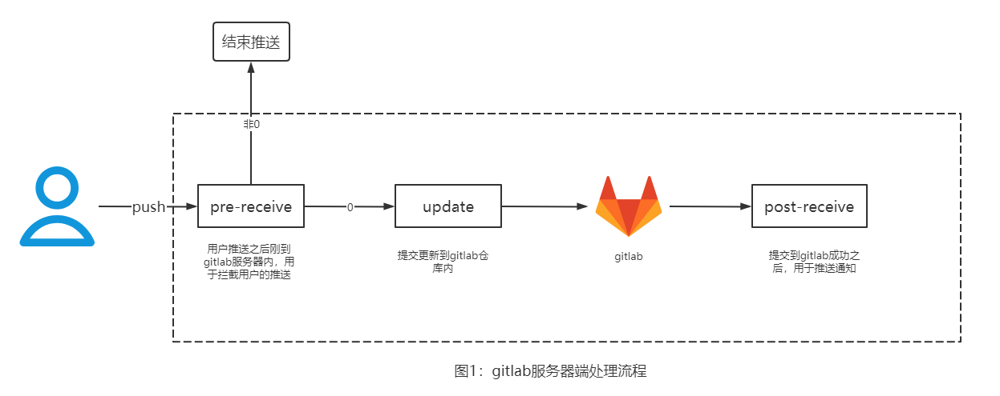
我们可以在 pre-receive（推送前）阶段来做提交信息的校验，如果不符合我们的要求，直接返回，则该推送便不会推送到 GitLab 仓库中去。
实践落地-简单例子
环境说明
gitlab版本:14.3.3
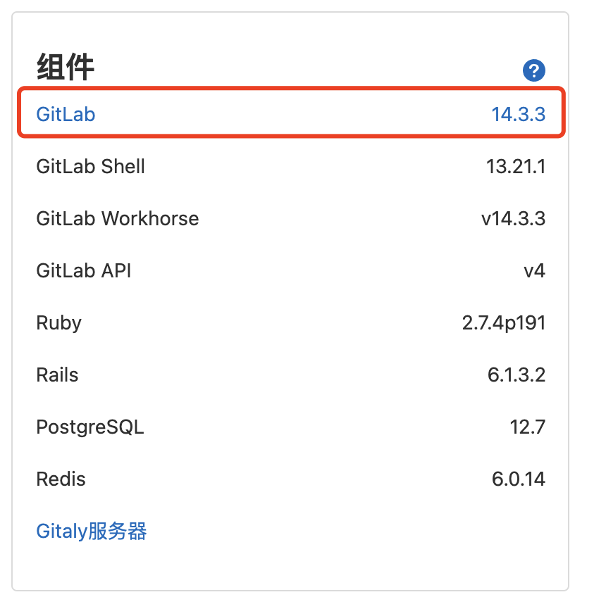
hook 配置
第一步，找到要配置仓库在 gitlab 中存储的路径，但因 gitlab 的仓库自某个版本开始采用 hash 存储，我们想要知道仓库对应的物理路径，可以如下操作
- Gitlab默认的仓库存储路径在 /var/opt/gitlab/git-data目录下，仓库存储在子目录repositories里面，可以通过修改/etc/gitlab/gitlab.rb文件中git_data_dirs参数来自定义仓库存储路径。下图是我们服务器的仓库路径。
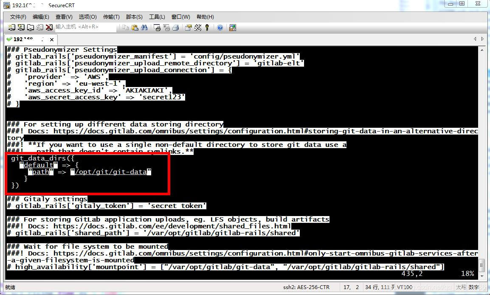
- 保存git代码路径时用的是hash来保存的，因为我要在代码库的hooks目录添加一些git hooks。但是gitlab保存的路径却是这样的如下。
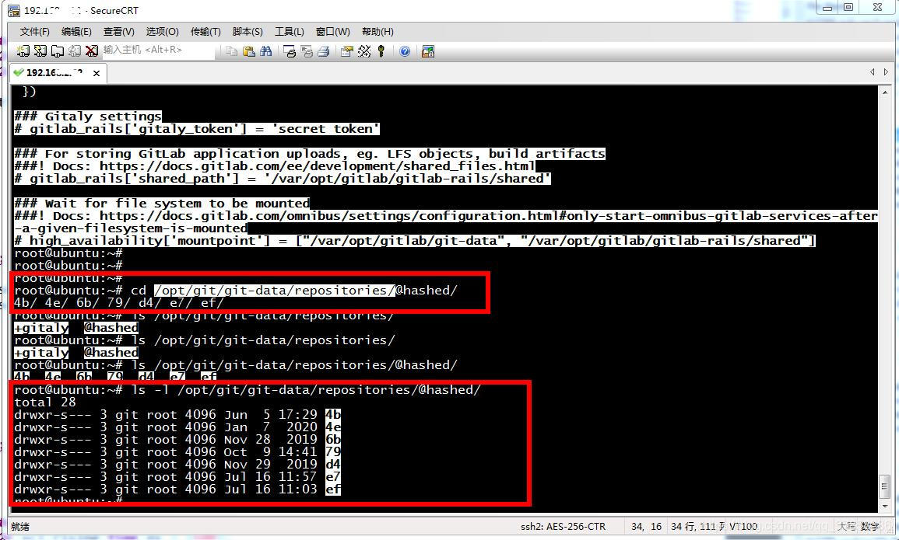
- gitlab是根据hash值来保存的路径，这个值是项目id,项目id在每个项目的设置页面可以找到。
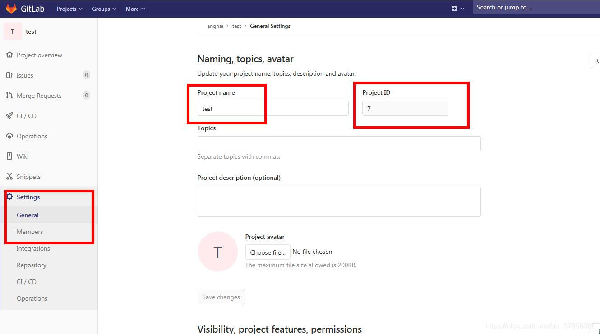
- 我test项目的ID是7，在shell中执行下面命令（echo -n ID | sha256sum）生成一个hash值，按这个值去找这个git库的代码位置。test项目的hash值是7902699be42c8a8e46fbbb4501726517e86b22c56a189f7625a6da49081b2451.
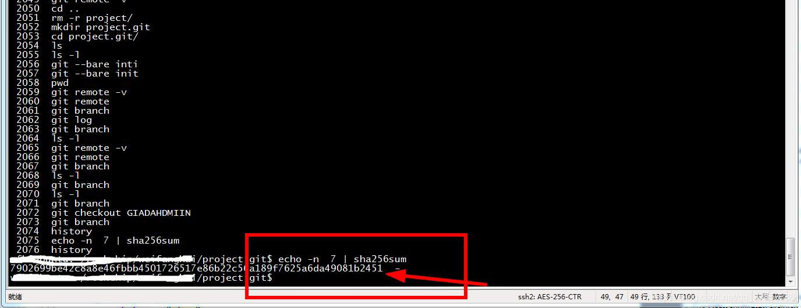
- 查看gitlab /opt/git/git-data/repositories/@hashed/79/02/目录，有一个跟这个一模一样的hash值，ok。
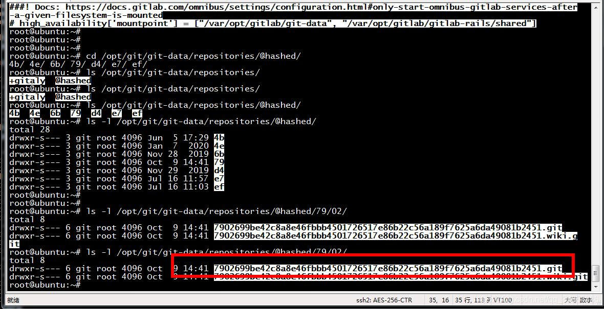
第三步，hooks 中是 gitlab 示例的一些钩子，我们这里首先新建目录 custom_hooks，然后用再创建文件 pre-receive（推送前），pre-receive 文件内容如下（脚本语言为 shell），同时修改 pre-receive 文件的权限。
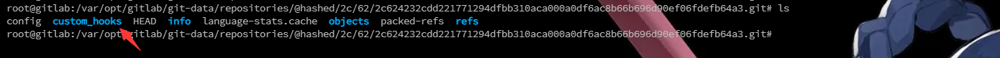
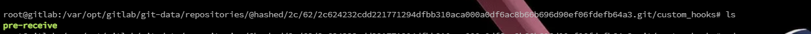
修改文件权限：
chmod +777 pre-receive
#!/bin/bash
echo "开始提交信息检查..."
# 从标准输入获取本次提交的commit id及分支的信息
read normalInput
ARR=($normalInput)
parentCommitId=${ARR[0]}
currentCommitId=${ARR[1]}
branch=${ARR[2]}
echo "您提交的分支为：$branch"
# 获取coomit的信息，用户，邮箱，msg等
user=$(git log --pretty=format:"%an" $currentCommitId -1)
echo "提交者为：$user"
commitDate=$(git log --pretty=format:"%cd" $currentCommitId -1)
echo "提交日期为：$commitDate"
msg=$(git log --pretty=format:"%s" $currentCommitId -1)
echo "提交的注释为：$msg"
flag=$(echo $msg | grep -E "fix.*|add.*|del.*|update.*|temp.*|test.*|revert.*|Merge.*")
if [ -z "$flag" ]; then
echo "[ERROR]提交信息校验未通过，需以 fix|add|del|update|temp|test|revert 开头"
exit 1
fi
第四步，在本地尝试推送，推送显示如下，如果不符合规范则无法提交成功。
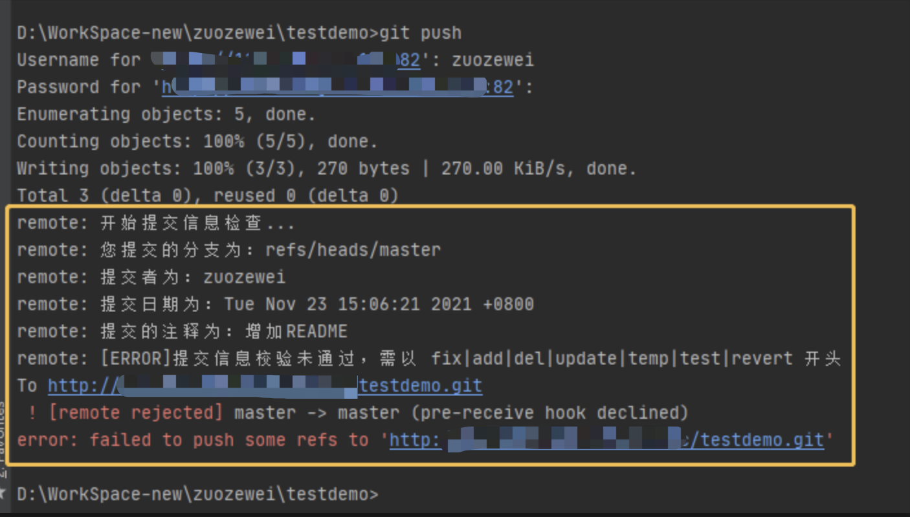
第五步，我们再次查看目录如下： 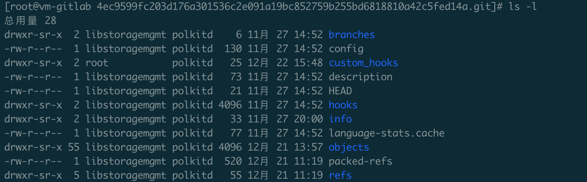
pre-receive.py[主要做了代码化风格检查+luacheck]
#!/usr/bin/python
# coding=utf-8
import re
import shutil
import tempfile
import subprocess
import os
import sys
import emoji
from rich.panel import Panel
from rich import box
from rich.console import Console
class Trigger(object):
def __init__(self):
'''
初始化提交者，提交id， 提交者msg信息,当前操作的分支
'''
self.pushAuthor = ""
self.pushCommit = []
self.pushMsg = []
self.pushCount = ""
self.pushFile = []
self.console = Console()
self.astyle_lint_dir = '/var/opt/gitlab/gitlab_cicd/format_check/linux'
def __getGitInfo(self):
'''
'''
self.oldObject, self.newObject, self.ref = sys.stdin.readline().strip().split(' ')
def __getPushInfo(self):
'''
git show命令获取push作者，时间，以及文件列表
文件的路径为相对于版本库根目录的一个相对路径
'''
rev = subprocess.Popen(
'git rev-list ' + self.newObject, shell=True, stdout=subprocess.PIPE)
revList = rev.stdout.readlines()
revList = [x.decode('utf-8').strip() for x in revList]
# print(revList)
# 查找从上次提交self.oldObject之后还有多少次提交
# 主要是为了获取提交的文件列表
if "0000000000000000000000000000000000000000" == self.oldObject:
exit(0)
indexOld = revList.index(self.oldObject)
pushList = revList[:indexOld]
pushList.reverse()
getFlag = False
# print(pushList)
# temp file
c_cpp_tempdir = tempfile.mkdtemp('git_c_cpp_hook')
lua_tempdir = tempfile.mkdtemp('git_lua_hook')
# print(lua_tempdir)
c_cpp_temp_file_path = []
lua_temp_file_path = []
# 循环获取每次提交的文件列表
for pObject in pushList:
p = subprocess.Popen('git show ' + pObject,
shell=True, stdout=subprocess.PIPE)
pipe = p.stdout.readlines()
pipe = [x.decode('utf-8').strip() for x in pipe]
self.pushMsg.append(pipe[4].strip() + '\n')
self.pushCommit.append(pipe[0].strip("commit").strip())
if not getFlag:
self.pushAuthor = pipe[1].strip(
"Author").replace(':', '').strip()
self.pushCount = len(pushList)
getFlag = True
# print(pipe)
# 验证是否c,c++,lua文件
fileList = [x for x in pipe if x.startswith("diff --git")]
# print("===>", fileList)
indexList = [x for x in pipe if x.startswith(
"index ") or x.startswith("similarity index 100%")]
# print("===>", indexList)
# fiList = dict(zip(fileList, indexList))
fiList = {fileList[i]: indexList[i]
for i in range(len(fileList))}
# print("===>", fiList)
for file in fiList:
if fiList[file].strip().startswith("similarity index 100%"):
continue
if not (file.lower().endswith('.cpp') or file.lower().endswith('.h') or file.lower().endswith('.c') or file.lower().endswith('.lua')):
continue
filename = file.split('/')[-1]
# print(filename)
self.pushFile.append(filename)
# git get Tree
content_hash = fiList[file].strip()[15:22]
# print(content_hash)
content_p = subprocess.Popen(
'git cat-file -p '+content_hash, shell=True, stdout=subprocess.PIPE)
cpipe = content_p.stdout.readlines()
cpipeList = [x.decode('utf-8') for x in cpipe]
# print(cpipeList)
if file.lower().endswith('.cpp') or file.lower().endswith('.h') or file.lower().endswith('.c'):
# print(filename)
# print(content_hash)
# print(file)
# print(cpipeList)
file_path = os.path.join(c_cpp_tempdir, filename)
c_cpp_temp_file_path.append(file_path + '\n')
with open(file_path, 'w+') as fp:
fp.writelines(cpipeList)
if file.lower().endswith('.lua'):
file_path = os.path.join(lua_tempdir, filename)
lua_temp_file_path.append(file_path + '\n')
with open(file_path, 'w+') as fp:
fp.writelines(cpipeList)
fc = open(self.astyle_lint_dir + '/.clang-format')
# print(fc.read())
with open(os.path.join(c_cpp_tempdir, '.clang-format'), 'w+') as fp:
fp.writelines(fc.read())
fc.close()
fe = open(self.astyle_lint_dir + '/.editorconfig')
# print(fe.read())
with open(os.path.join(lua_tempdir, '.editorconfig'), 'w+') as fp:
fp.writelines(fe.read())
fe.close()
# checkstyle
exitflag = 0
exitflag |= self.check_commit_msg()
exitflag |= self.c_cpp_handler_checkstyle(
c_cpp_tempdir, c_cpp_temp_file_path)
exitflag |= self.lua_handler_checkstyle(
lua_tempdir, lua_temp_file_path)
exitflag |= self.lua_handler_checkdiagnosis(
lua_tempdir, lua_temp_file_path)
if 1 == exitflag:
exit(1)
# 处理c,cpp文件
def c_cpp_handler_checkstyle(self, c_cpp_tempdir, c_cpp_temp_file_path):
try:
blag = 0
finalpipe = []
c_cpp_temp_name = []
for path in c_cpp_temp_file_path:
cmd = r'python ' + self.astyle_lint_dir + "/../run-clang-format.py" + \
' --clang-format-executable clang-format -r ' + path
# print(cmd)
result = subprocess.Popen(
cmd, shell=True, stdout=subprocess.PIPE, stderr=subprocess.PIPE)
rpipe = result.stdout.readlines()
# print(rpipe)
if len(rpipe) > 0:
rpipeList = [
x.decode('utf-8').replace(c_cpp_tempdir + '/', '') for x in rpipe]
finalpipe.append("".join(rpipeList))
(filepath, tempfilename) = os.path.split(path)
c_cpp_temp_name.append(tempfilename)
blag = 1
# print(finalpipe)
if len(finalpipe) > 0:
self.console.print(
Panel('[blue]' + " [ERROR]处理c,cpp文件代码规范未通过\n" +
" 需要用vscode clang-format 插件进行代码格式化\n" +
" 或者去tools\gitlab_cicd\n" +
" 下找到install.bat进行自动格式化" + '\n' +
"════════════════════════════════════════════════════════════════════════════\n" +
"===>有问题的c,cpp文件<===:\n" + "".join(c_cpp_temp_name) +
"\n===>错误提示<===:\n" +
re.sub('\x1b.*?m', '', "".join(finalpipe)) +
'[/]', box=box.DOUBLE))
return blag
finally:
shutil.rmtree(c_cpp_tempdir)
# pass
# 处理lua文件风格
def lua_handler_checkstyle(self, lua_tempdir, lua_temp_file_path):
try:
blag = 0
finalpipe = []
lua_error_temp_name = []
for path in lua_temp_file_path:
cmd = self.astyle_lint_dir + '/codeformat check -f ' + path + ' -DAE'
# print(cmd)
result = subprocess.Popen(
cmd, shell=True, stdout=subprocess.PIPE, stderr=subprocess.PIPE)
rpipe = result.stdout.readlines()
# print(rpipe)
if len(rpipe) > 0:
rpipeList = [x.decode('utf-8').replace(lua_tempdir + '/', '')
for x in rpipe]
rpipestr = "".join(rpipeList)
(filepath, tempfilename) = os.path.split(path)
if(not re.search(r'^Check.*?OK$', rpipestr)):
finalpipe.append(rpipestr)
lua_error_temp_name.append(tempfilename)
blag = 1
# print(lua_error_temp_name)
if 1 == blag:
self.console.print(
Panel('[blue]' + " [ERROR]处理lua文件代码规范未通过\n" +
" 需要用vscode EmmyLuaCodeStyle 插件进行代码格式化\n" +
" 或者去tools\gitlab_cicd\n" +
" 下找到install.bat进行自动格式化" + '\n' +
"════════════════════════════════════════════════════════════════════════════\n" +
"===>有问题的lua文件<===:\n" + "".join(lua_error_temp_name) +
"\n===>错误提示<===:\n" +
re.sub('\x1b.*?m', '', "".join(finalpipe)) +
'[/]', box=box.DOUBLE))
return blag
finally:
# shutil.rmtree(lua_tempdir)
pass
def lua_handler_checkdiagnosis(self, lua_tempdir, lua_temp_file_path):
try:
blag = 0
finalpipe = []
lua_error_temp_name = []
for path in lua_temp_file_path:
cmd = self.astyle_lint_dir + '/luacheck ' + path + \
' --no-config --no-default-config --codes -q --exclude-files **/config.lua --ignore 311'
# print(cmd)
result = subprocess.Popen(
cmd, shell=True, stdout=subprocess.PIPE, stderr=subprocess.PIPE)
rpipe = result.stdout.readlines()
# print(rpipe)
if len(rpipe) > 0:
rpipeList = [
x.decode('utf-8').replace(lua_tempdir + '/', '') for x in rpipe]
rpipestr = "".join(rpipeList)
(filepath, tempfilename) = os.path.split(path)
if(re.findall(r'^Check.*?error', rpipestr)):
finalpipe.append(rpipestr)
lua_error_temp_name.append(tempfilename)
blag = 1
# print(finalpipe)
if 1 == blag:
self.console.print(
Panel('[blue]' + " [ERROR]处理lua文件代码语法未通过\n" +
" 请手动修改并提交, 直到所有代码都符合规范为止..." + '\n' +
"════════════════════════════════════════════════════════════════════════════\n" +
"===>有问题的lua文件<===:\n" +
"".join(lua_error_temp_name) +
" \n===>错误提示<===:\n" +
re.sub('\x1b.*?m', '', "".join(finalpipe)) +
'[/]', box=box.DOUBLE, expand=True))
return blag
finally:
shutil.rmtree(lua_tempdir)
# pass
def check_commit_msg(self):
print("开始提交信息检查...")
print("提交者为:", self.pushAuthor)
print("当前提交总次数:", self.pushCount)
print("当前提交注释消息:")
for msg in self.pushMsg:
print(msg, end="")
for msg in self.pushMsg:
if len(msg) < 10:
self.console.print(
Panel('[blue]' + "[ERROR]提交信息校验未通过\n"
"msg长度必须大于10" + '[/]', box=box.DOUBLE))
return 1
msgList = msg.split(" ", 1)
if not (len(msgList) == 2 and emoji.is_emoji(msgList[0]) and re.search(r'^[init|feat|fix|docs|style|refactor|perf|test|build|ci|chore|revert](.*):[\s]{1}[\S]{1,20}\n', msgList[1]), re.S):
self.console.print(
Panel('[blue]' + " [ERROR]提交信息校验未通过,内容不符合规范\n" +
" 请去vscode下载git-commit-plugin进行规范提交\n" +
"════════════════════════════════════════════════════════════════════════════\n" +
"e.g.:🎉 init(影响范围模块): 项目初始化\n" +
"e.g.:✨ feat(影响范围模块): 新增某某功能\n" +
"e.g.:🐞 fix(影响范围模块): 修复某某bug\n" +
"e.g.:📃 docs(影响范围模块): 新增某某说明文档\n" +
"e.g.:🌈 style(影响范围模块): 仅仅修改了空格,缩进,逗号等等\n" +
"e.g.:🦄 refactor(影响范围模块): 重构某某功能\n" +
"e.g.:🎈 perf(影响范围模块): 优化了提高某某模块性能\n" +
"e.g.:🧪 test(影响范围模块): 测试模块功能\n" +
"e.g.:🔧 build(影响范围模块): 构建了那个版本\n" +
"e.g.:🐎 ci(影响范围模块): 对某某ci文件的修改\n" +
"e.g.:🐳 chore(影响范围模块): 改变了某某构建流程\n" +
"e.g.:↩ revert(影响范围模块): 回退某个版本\n" +
'[/]', box=box.DOUBLE))
return 1
return 0
def getGitPushInfo(self):
self.__getGitInfo()
self.__getPushInfo()
if __name__ == "__main__":
t = Trigger()
t.getGitPushInfo()
exit(0)